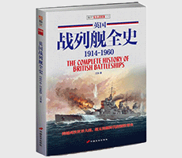

英国战列舰全史 1914-1960

| 作者: 江泓 著 | 开本: 16开 |
| 出版社: 中国长安出版社 | 纸张: 铜版纸 |
| 出版时间: 2015-09 | 页数: 272页 |
| 版次: 1 | 字数: 530千字 |
| ISBN: 9787510709203 | 定价: 59.80 |
| 分类: 军事 | 装帧: 平装 |
内容简介:
作为曾经辉煌的日不落帝国，英国依靠强大的皇家海军控制着整个海洋。进入铁甲蒸汽时代之后，拥有大口径主炮、厚重装甲和高功率发动机的战列舰成为英国海上力量的象征。在战列舰建造领域，英国不断推出具有跨时代意义的作品，其中包括“君权”级、“无畏”号、“伊丽莎白女王”级等，这些强大的战舰成为引领世界海军发展的风向标。尽管如此有名，但是国内还没有系统完整介绍英国战列舰的著作，而本书在这方面做了尝试。从“勇士”号到“前卫”号，本书收录并详细介绍了曾经在英国皇家海军中服役的每一艘战列舰，甚至还包括了没有成行的N3战列舰计划等。本书将成为国内读者系统了解英国战列舰和英国近现代海权的一手资料。
作者简介:
江泓，男，1984年生，博物馆学及考古学硕士，现就业于烟台市博物馆。自幼对于军事历史有浓厚的兴趣，尤其是二战时期的武器装备、战史、战略思想等。自2012年开始编写军事类书籍，现已出版多部作品。
Copyright © 2018-2020 徐悦佳. All rights reserved.